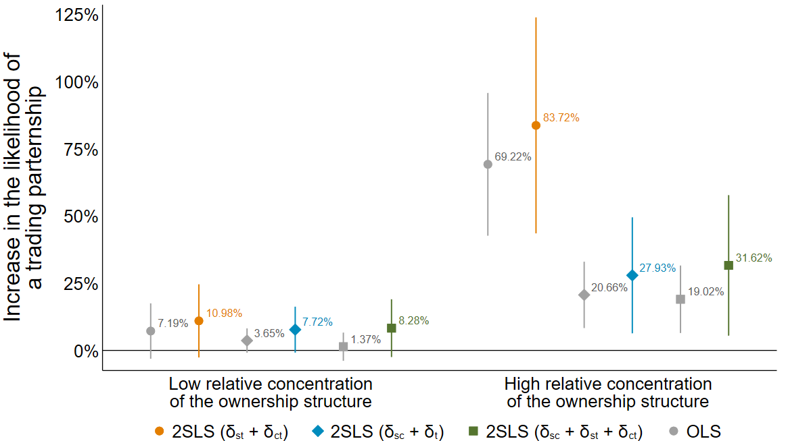
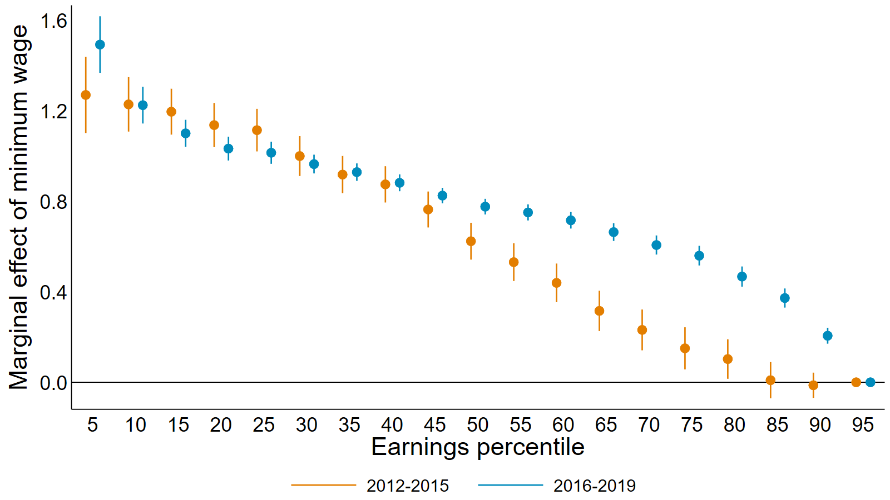
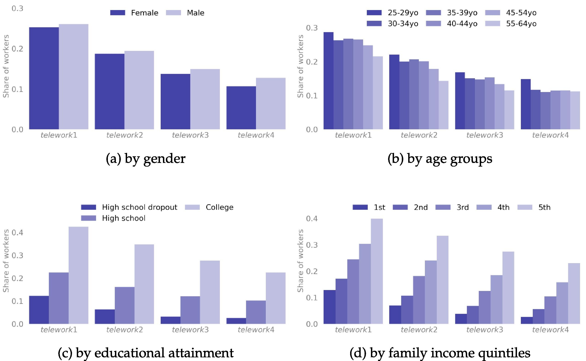
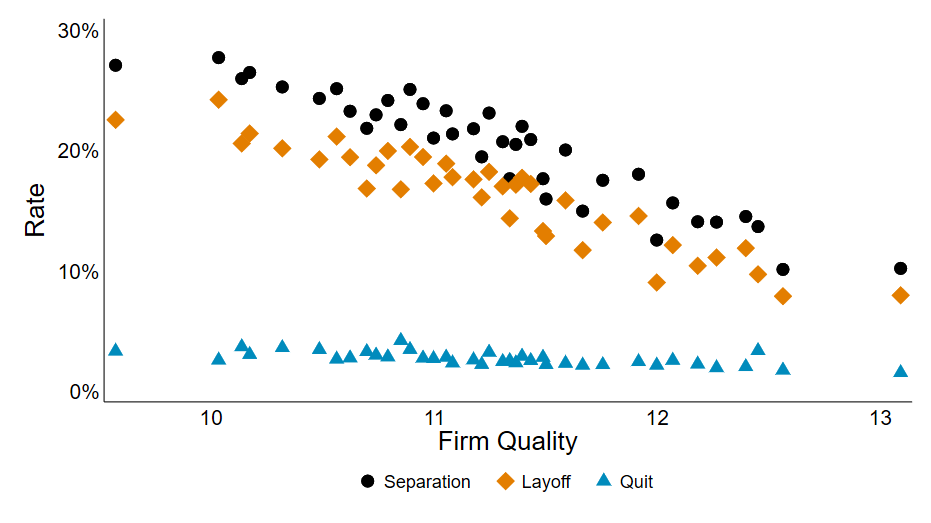
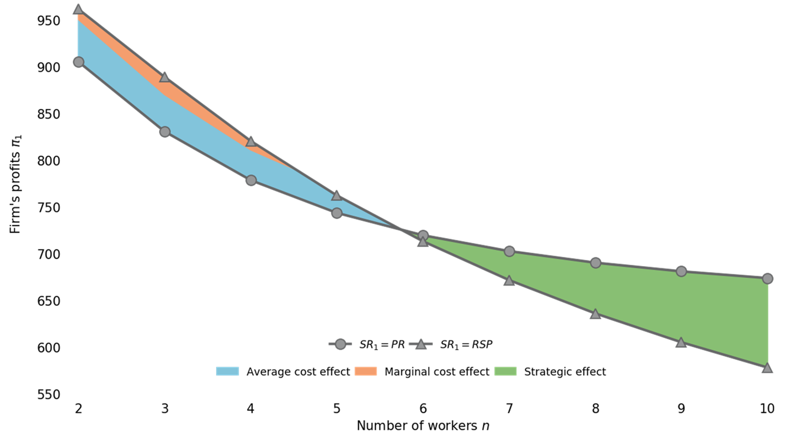
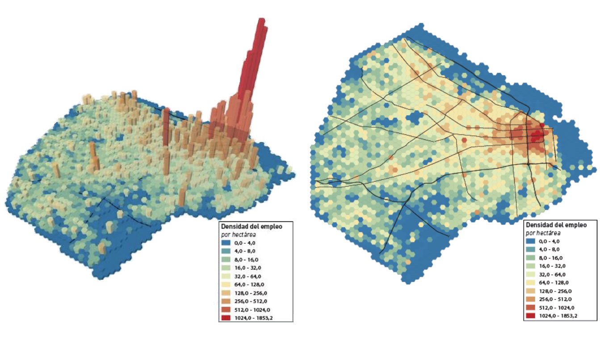

I am an Applied Economist working on firms and their role in shaping labor and financial markets. I study how firm decision-makers interact with employees, business partners, and stakeholders.
My main fields of interest are Labor Economics, Industrial Organization, and Development Economics.
Contact Me





Invited Instructor (Game Theory & Econometrics) | CABALLERO, Carmen
UNCuyo | Mendoza, ARGENTINABsc in Political Science and Public Administration | CUETO, Walter
UNCuyo | Mendoza, ARGENTINA